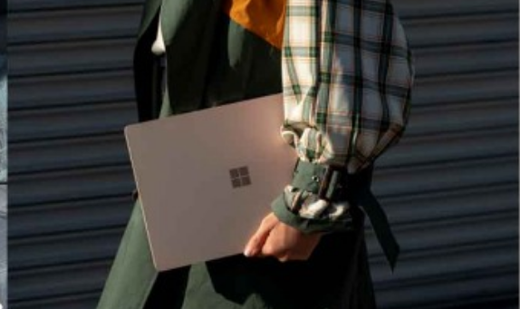

案例介绍
新年新礼，新未来

电脑系统
Windows 95、Windows 98 、WindowsMe、Windows 2000、Windows XP、Windows Server 2003、Windows Vista、 Windows 7 、 Windows 8、Windows 8.1、Windows 10-

MS-DOS
MS-DOS：微软公司的早期产品，它是一个命令行界面。早期的Windows版本要在MS-DOS下运行，到了Windows NT及以后的产品已经可以脱离MS-DOS运行了，基于用户因软硬件在 Windows NT 不能正常运作，微软相续推出Windows 95，Windows 98，Windows Me在MS-DOS下运行的过渡产品。 -
MS-DOS
MS-DOS：微软公司的早期产品，它是一个命令行界面。早期的Windows版本要在MS-DOS下运行，到了Windows NT及以后的产品已经可以脱离MS-DOS运行了，基于用户因软硬件在 Windows NT 不能正常运作，微软相续推出Windows 95，Windows 98，Windows Me在MS-DOS下运行的过渡产品。 -
MS-DOS
MS-DOS：微软公司的早期产品，它是一个命令行界面。早期的Windows版本要在MS-DOS下运行，到了Windows NT及以后的产品已经可以脱离MS-DOS运行了，基于用户因软硬件在 Windows NT 不能正常运作，微软相续推出Windows 95，Windows 98，Windows Me在MS-DOS下运行的过渡产品。